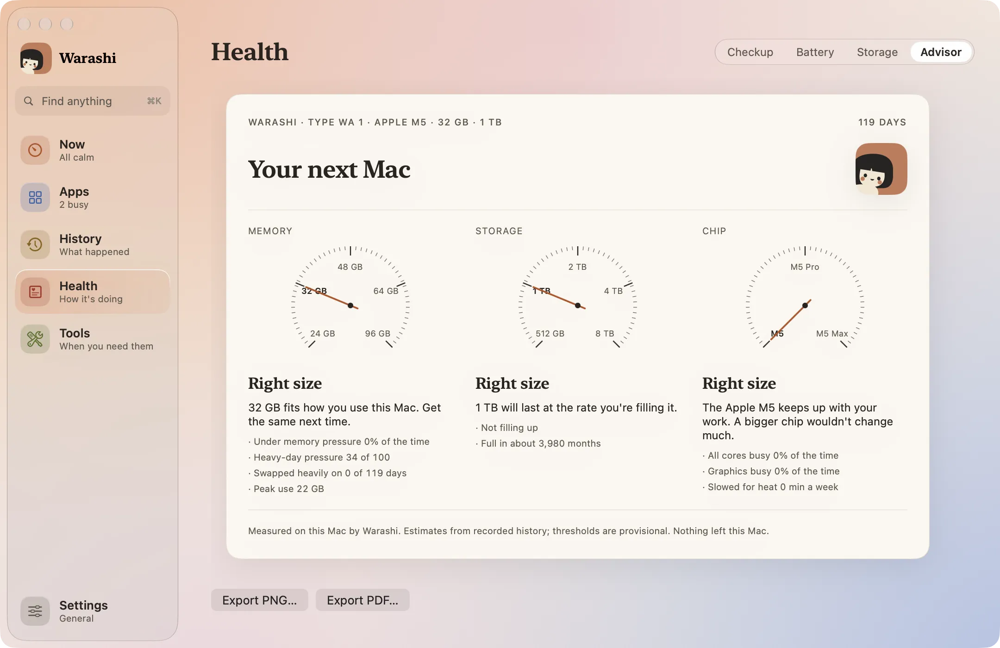
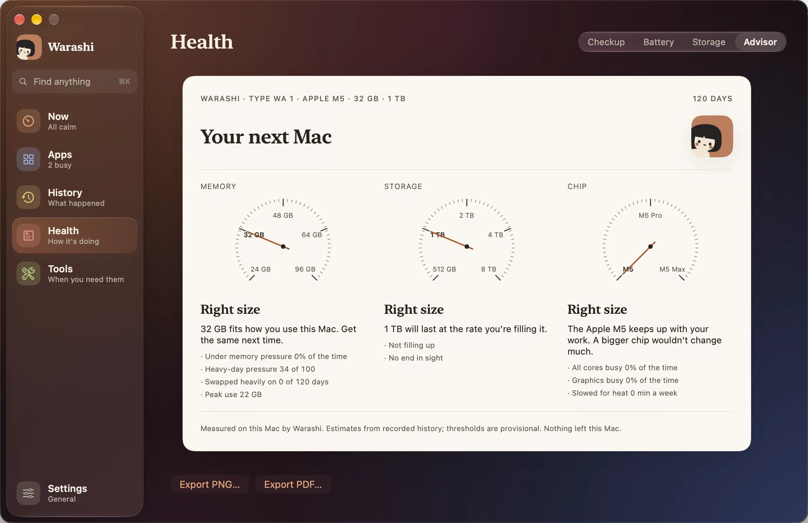

Acheter un Mac, c’est deviner : 16 Go suffisent-ils ? 512 Go vont-ils se remplir ? Faut-il une puce Pro ? Le Conseiller d’achat répond d’après la façon dont vous utilisez réellement ce Mac. C’est l’onglet Conseiller d’État.
- Laisser Warashi tourner
Chaque jour, Warashi écrit une petite ligne de données : pression mémoire, swap, stockage utilisé, minutes sous forte charge et minutes ralenties par la chaleur. La page compte les jours : Jour 12 sur 30.
- Lire le premier aperçu après 7 jours
Au bout d’une semaine, vous obtenez un premier aperçu, signalé comme peu fiable. Le rapport complet arrive après 30 jours.
- Ouvrir le rapport
Choisissez État, puis Conseiller. Trois cadrans répondent pour Mémoire, Stockage et Puce, chacun avec les données en dessous.


- L’exporter
Cliquez sur Exporter en PNG… ou Exporter en PDF… sous la carte pour la conserver ou la partager.
Ce que signifie chaque réponse
- Mémoire : si vous en avez besoin de plus, d’après la pression mémoire et le swap de vos jours les plus chargés, arrondi aux capacités qu’Apple vend réellement.
- Stockage : à quelle vitesse votre disque se remplit, et ce qu’il vous faudrait pour trois ans à ce rythme, avec de la marge.
- Puce : à quelle fréquence la puce tourne à plein régime ou ralentit à cause de la chaleur, et si davantage de cœurs ou un ventilateur aideraient.